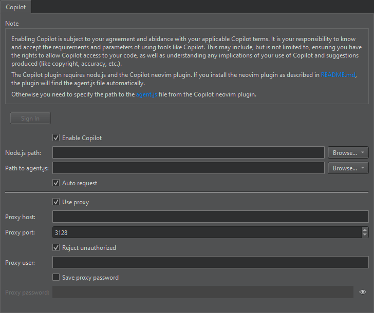
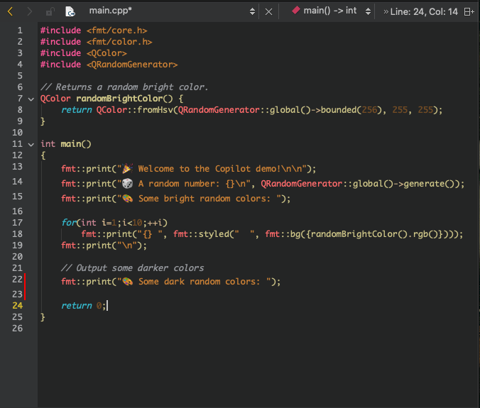

Use GitHub Copilot
The Copilot plugin (disabled by default) integrates GitHub Copilot into Qt Creator. You can view suggestions from Copilot in the Edit mode.
Note: If you enable the Copilot plugin, you must agree with and abide by the GitHub terms of use. It is your responsibility to know and accept the requirements and parameters of using Copilot, such as ensuring you have the rights to grant it access to your code. Also, you must understand the implications of using it and the suggestions it produces, such as code copyright and accuracy.
Requirements
To use the Copilot plugin, you need:
- An active GitHub Copilot subscription.
- GitHub Copilot Neovim plugin installed (requires Node.js), as described in Copilot.vim/Readme.md.
Set Copilot preferences
To set preferences for using Copilot:
- Go to Preferences > Copilot.

- Select Enable Copilot to use Copilot.
- Select Sign In to sign into your subscription, activate your device, and authorize the GitHub Copilot plugin.
The button turns into a Sign Out button.
- In Node.js path, enter the full path to the Node.js executable.
- In Path to agent.js, enter the path to agent.js in the Copilot Neovim plugin installation folder.
- Select Auto request to receive suggestions for the current text cursor position when you make changes.
- Select Use proxy to use a proxy server to connect to Copilot servers.
- In Proxy host, enter the host name of the proxy server.
- In Proxy port, enter the port number of the proxy server.
- Select Reject unauthorized to prevent the security risk presented by accepting unauthorized certificates from the proxy server.
- In Proxy user, enter the user name to authenticate to the proxy server.
- Select Save proxy password to save the password to authenticate to the proxy server.
Note: The password is saved insecurely.
- In Proxy password, enter the password to save. To see the password as you type, select
 .
.
Receive suggestions
When you write code in the Edit mode and Auto request is enabled, Copilot automatically makes suggestions when you type.

To manually request a suggestion at the current editor's cursor position, enter t (Request Copilot Suggestion) in the locator.
Hover the mouse over a suggestion to show a toolbar with  and
and  buttons for cycling between Copilot suggestions.
buttons for cycling between Copilot suggestions.
To apply a suggestion as a whole, select Apply or press the Tab key.
To apply a suggestion word-by-word, select Apply Word or press Alt+Right.
To reject a suggestion, press Esc or the arrow keys.
Turn suggestions on and off
You can turn the Copilot suggestions on and off either globally for all projects or at project level for a particular project.
To turn Copilot suggestions on or off globally, select (Toggle Copilot). This also sets the value of Enable Copilot in Preferences > Copilot accordingly.
To turn Copilot suggestions on or off for a particular project, go to Projects > Project Settings > Copilot and then select or clear Enable Copilot.
See also Enable and disable plugins and Edit Mode.